BATXI1
Zinematika
Dinamika
Batxi2 ▸
1 ebaluazioa
2 ebaluazioa
3 ebaluazioa
Kontuan izan beharrekoak:
S = Amaierako posizioa
S₀ = Hasierako posizioa
V = Abiadura (Azeleraziorik ez dagoenez beti berdina izango da)
t = Denbora
Unitateak NORMALIAN m/s
Kontuan izan beharrekoak:
Objetu bat bere altuera maximora iristen denean V=0 m/s izango da.
Objetu bat gora doianian azelerazioa +, eta behera doianian -.
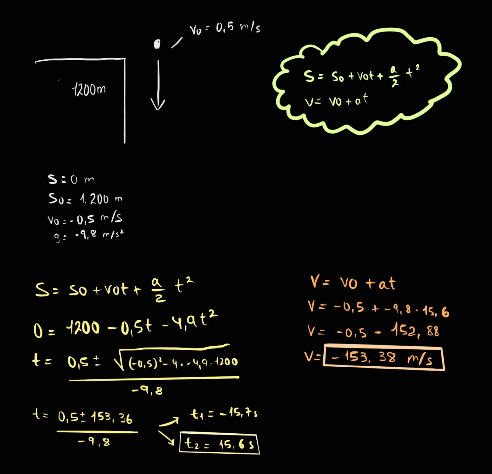
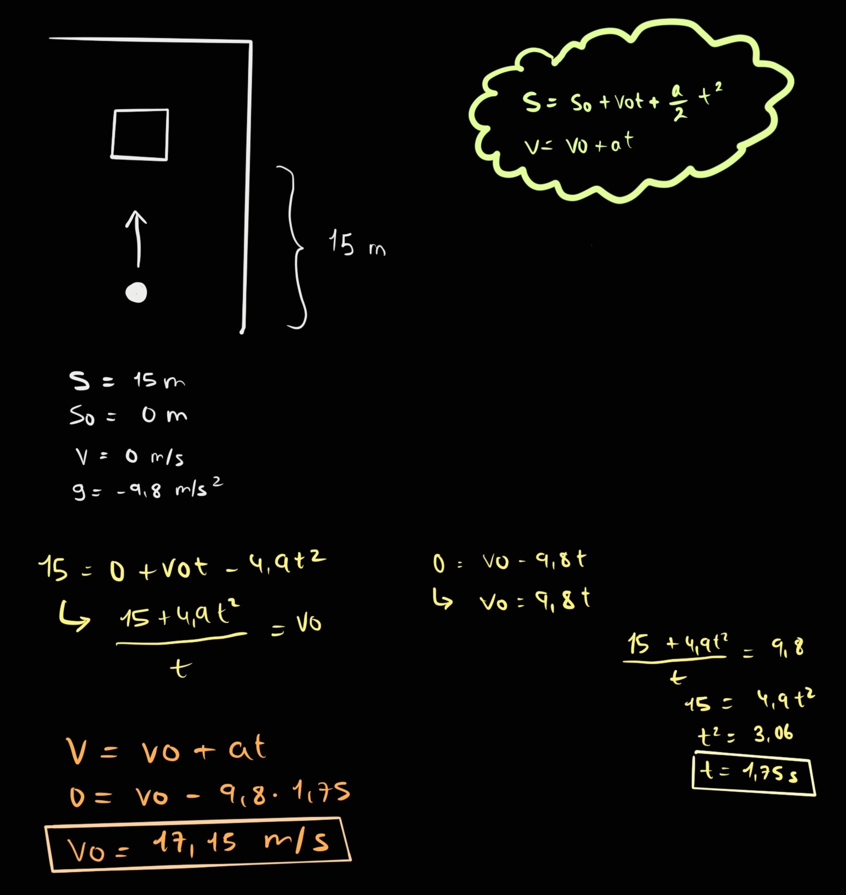
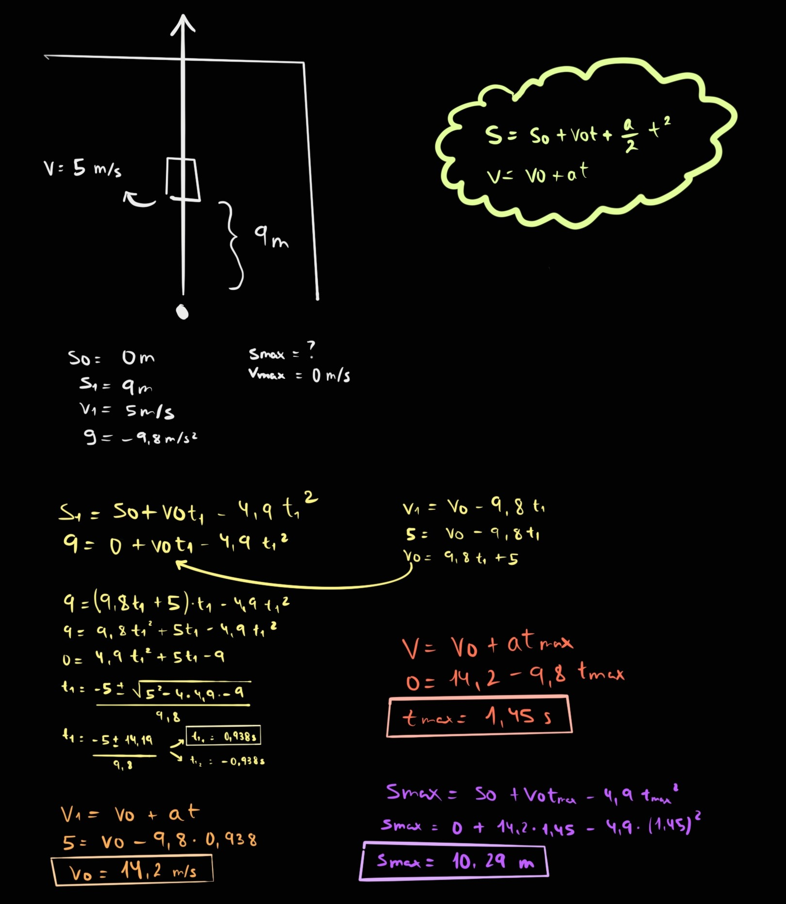
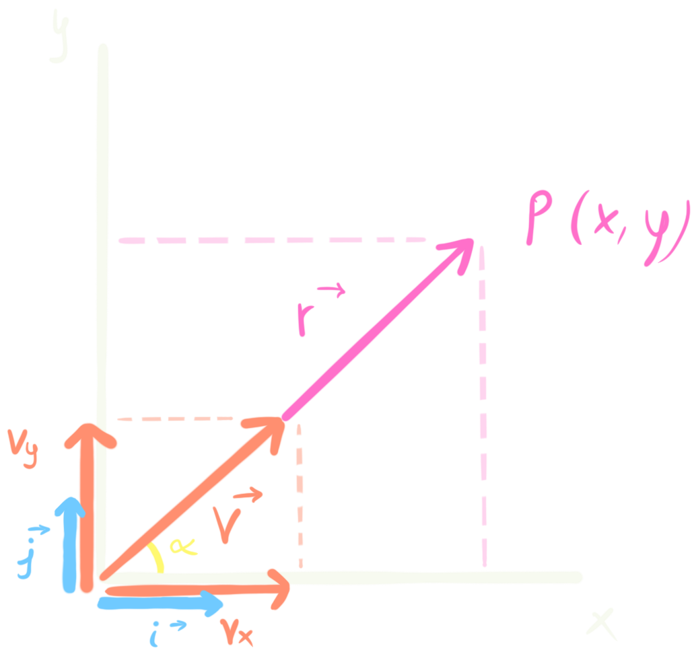
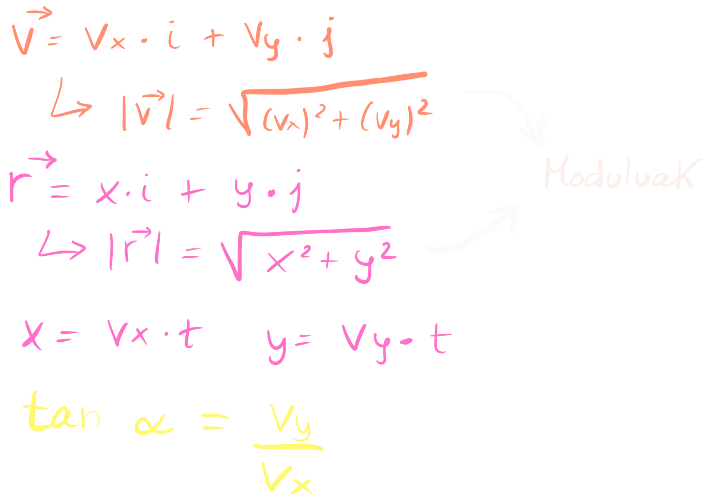
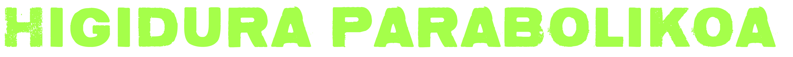
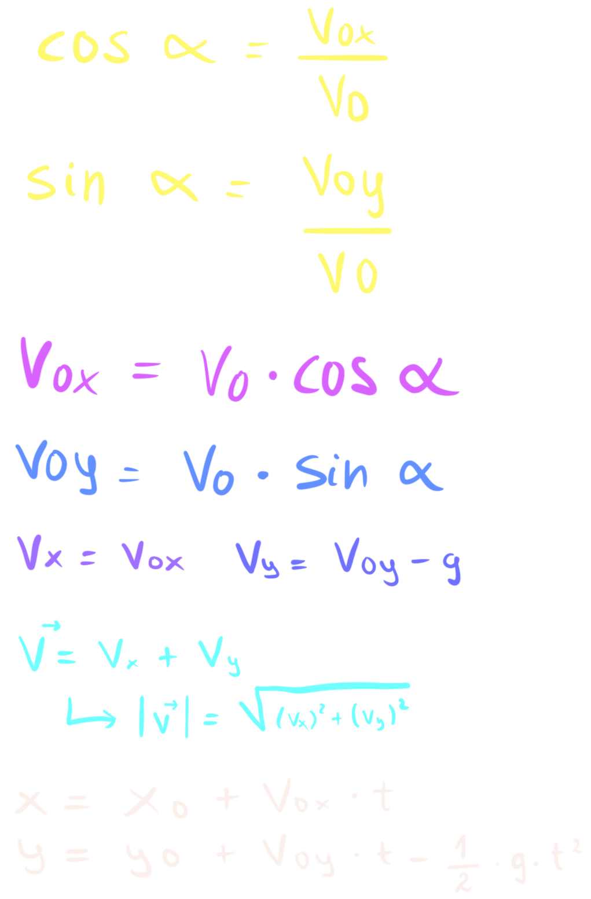
Kontuan izan beharrekoak:
φ ⇝ S S = R · φ (Biratutako angelua · erradioa)
ω ⇝ V V = R · ω (rad/s)
α ⇝ a a
t
= R · α (rad/s²) a
n
= (v²/R) = ω² · R
Unitate aldaketak:
ω = (x bira/ min) · (2π rad/ 1 bira) · (1 min/ 60s)
